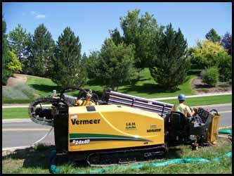

Horizontal Directional Drilling
Our Horizontal Directional Drill (HDD) fleet includes drilling and boring equipment suitable for both large and small projects. Our biggest drill rigs are capable of larger diameter bores allowing for installation of multiple conduits or steel casing. Depending on soil conditions and the type of pipe being installed, the larger drills are capable of bore lengths up to 800 feet. They are also capable of drilling through most rocky soils.
Our compact directional drills are suitable for residential and smaller locations where set up space is restricted. When a worksite is too small to allow for directional boring equipment, pneumatic missile boring may be utilized. Contact us with your project needs and let us explain how we can help get your job done.
Vacuum Excavating
Vacuum excavators are used for potholing to locate utilities prior to drilling and to suction drill slurry as necessary during the drilling process.
Missile Boring
When worksite will not allow for directional boring equipment, pneumatic missile boring can be utilized.
Televised Sewer Inspection
Our sewer main camera system with a lateral launching camera allows us to provide televised inspection of sewer mains as well as lateral service lines. By using the lateral launcher from the main sewer line, it is not necessary to enter private homes and businesses to access the individual service lines. Our cameras are equipped with sondes and locating equipment which allow us to measure the location and depths of both main and service lines.